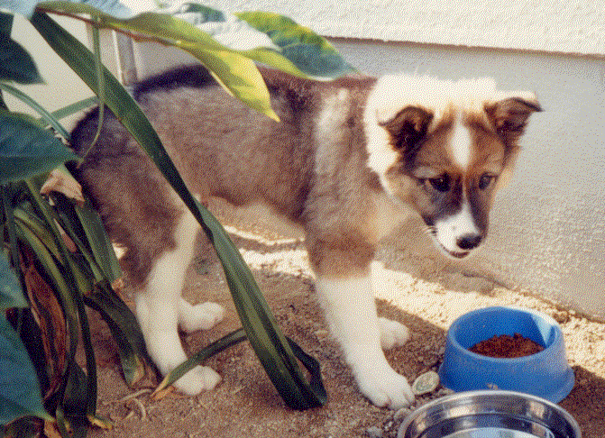

第七なんでやねん・本気おとんの話
家族ネタが続いて申し訳ないが、おとんの話をしよう。家族がみんな変なのだからしょうがない。
うちのおとんは、何と言うか・・・本気なのである。例えば、家の犬の散歩。普通、犬の散歩など面倒くさくて２０分くらいで帰ってくるものだが、おとんは違う。２時間３時間はあたりまえである。いや、犬疲れるわ！ ゲハゲハ言うとるで！ ついには、おとんが引っ張っても、伏せたまま微動だにしなくなっとるし。そればかりではない。私が犬の散歩に行く場合でもおとんの本気さを甘く見てはいけない。せっかくの休日に犬の散歩にいくのは面倒なので、私は正規の散歩ルートを外れ、ちょっと近道をしたのだが・・・突如、前方から叫び声が聞こえた。「近道あかん！！」─おとんおるで！ オレのショートカットを先読みして、先回りして見張っとるよ！ そこまでするならあんたが散歩いけや！ オレが散歩行く意味あれへんやろ！
うちの犬。かわいいやろ(笑)
この手の出来事は、他にもたくさんある。おとんが「とつの体を鍛える」と言って、一時期私とおとんは、毎朝ランニングをしていた。ある朝、ランニング中に私が「もうしんどい〜」と弱音を吐くと、おとんは言う。
「この程度でなんや！ おとうさんなんか、息一つ乱れてへんやろ！」
しばらく仕方なく走り続けていたのだが、私はふと違和感を感じた。横を走るおとん、口で息をせず、あくまで鼻で息をしているのである。言い替えると、息における鼻の使用にこだわっていのである。どうやら、「息一つ乱れていない」ことを示そうとしているらしい。ムリしている分、ちょっと「シュゥゥゥ・・・シュゴオォォ」とすごい鼻息音が聞こえるが、それでもまあ、「おれもがんばろう」と思えたのである。
ところが少しして、隣にいたはずのおとんがいなくなっている。「おや？」と振り返ると、おとん、音もなく力つきてはるよ！ 酸素不足で病院送りである。おとん、何があんたにそこまでさせるねん！
おとんの本気さが伝わったであろうか？ このように、何に対しても気合い充分なのである。
最後に、私が人生の中で見た、おとんが最も本気になった瞬間を紹介しよう。
それはある冬の日のできごと。おとんの指に、「さかむけ（さかむくれ）」ができていたので、私と姉が「痛そう」「ツメキリで切ったら？」とアドバイスしたのだが・・・。おとん曰く、
「それは女々しい。」
あんたが強すぎるねん。おとんは続けた。
「こんなもん、手でむいてしまえば、痛くなくなるねん。」
しかしムリヤリむくのはやめた方が・・・痛いよ？
「ほら、見ときや。こう・・・・・!!!!!!!!!!!」
目うるんどるがな！本格的に痛かったんちゃうのん！ 言われたとおり、オレも姉もしっかり見ちゃったよ！
以後、私の家に「さかむけだけは、ムリするな」という家訓ができたことは言うまでもない。（完）
第八なんでやねんへ なんでやねん目次へ ＨＰトップに戻る